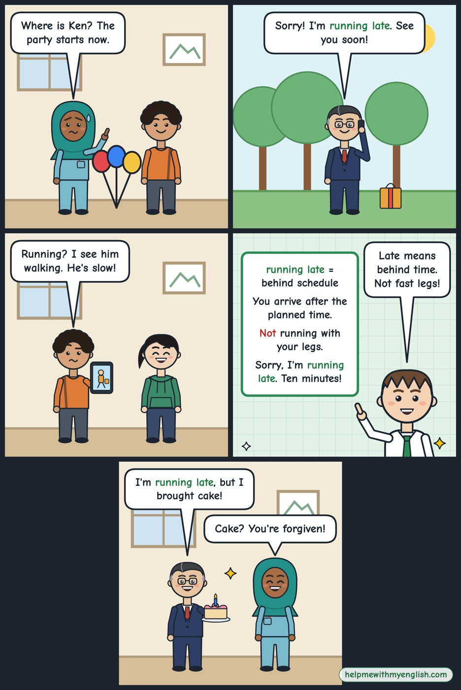

running late
To be behind schedule, so you will arrive later than planned.
Sorry, I'm running late. I'll be there in ten minutes.
Tip: Use 'be running late' (or 'I'm running late') as a short warning to someone waiting for you; it's often followed by a time, like 'running about fifteen minutes late'.
Hear it in conversation
Workbook
1. What does it mean?
In this conversation, what does "running late" mean?
2. Fill the gap
The meeting was supposed to start at nine, but the manager is , so we're waiting.
3. Choose the best reply
Ken: Hi, it's Amira. I'm stuck in traffic and I think I'll miss our lunch booking at one.
4. Your turn: speak
Tell me about a time you were late for something important. What happened?
Show an example answer
Last month I had a job interview across town, and my train was delayed. I realised I was running late, so I called the office and told them I'd be about fifteen minutes behind. They were very understanding, and the interview went well in the end.
Answer key: running late
- 1. B. He is behind schedule and will arrive after the planned time.
- 2. running late
- 3. A. Don't worry, just text me if you're running late and I'll tell the restaurant.
- 4. Example: Last month I had a job interview across town, and my train was delayed. I realised I was running late, so I called the office and told them I'd be about fifteen minutes behind. They were very understanding, and the interview went well in the end.
See it in a comic
